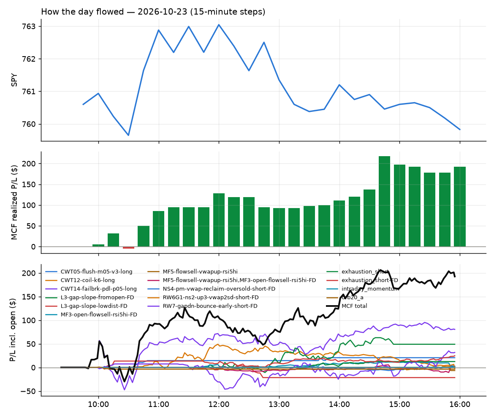
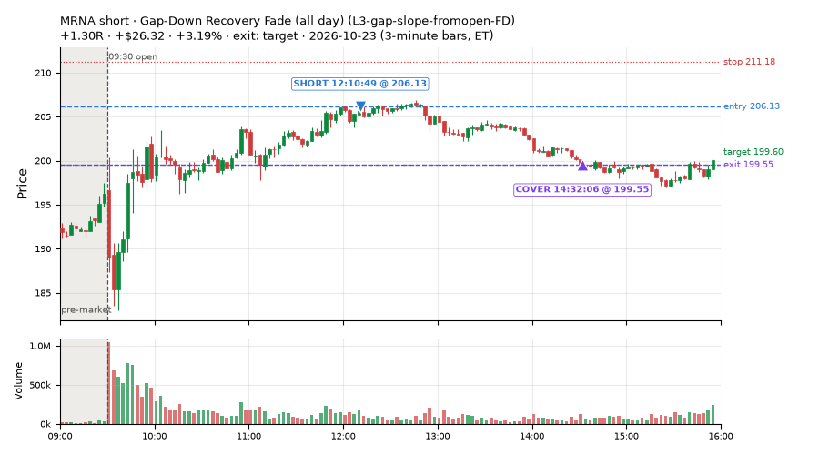
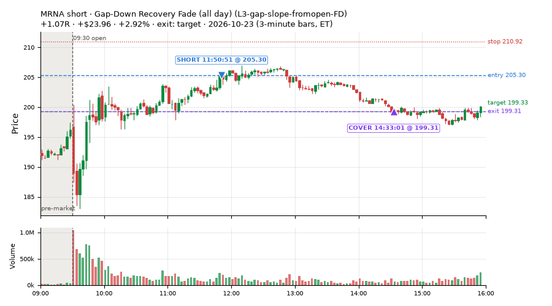
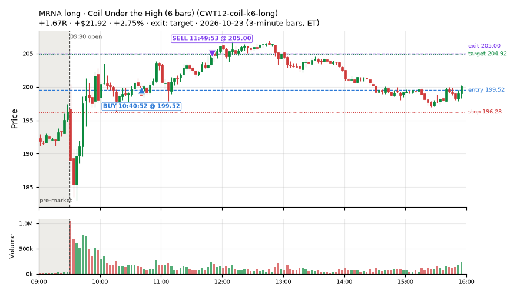
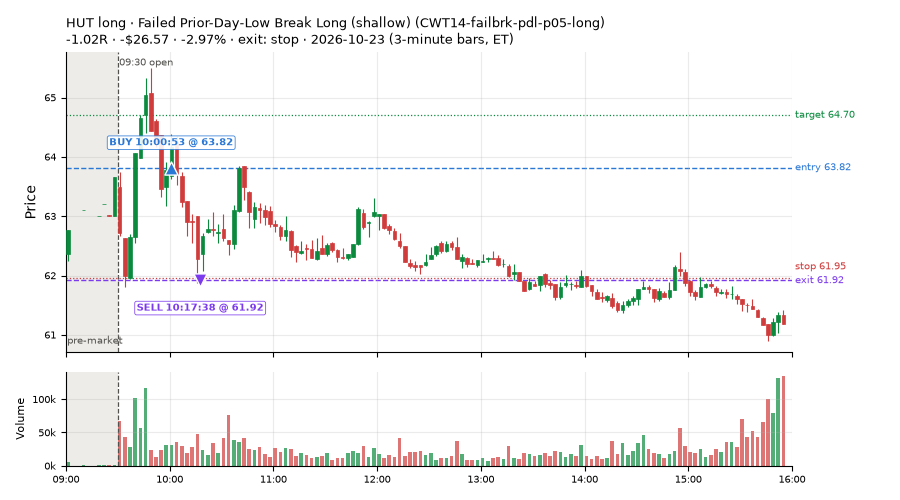
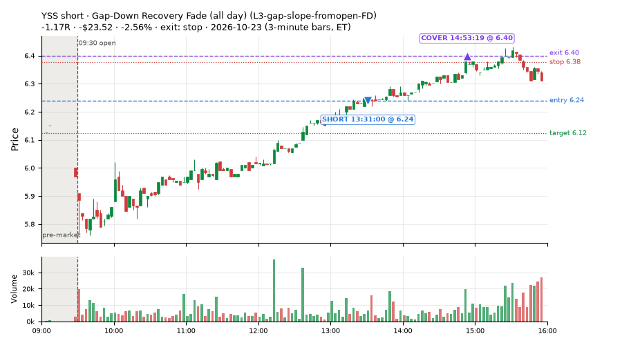
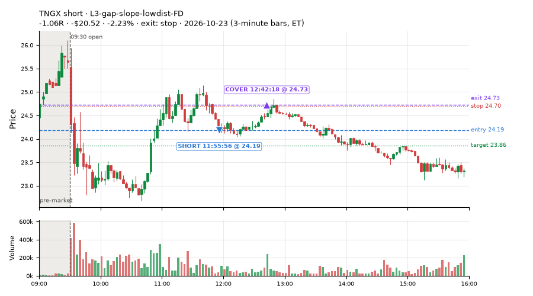
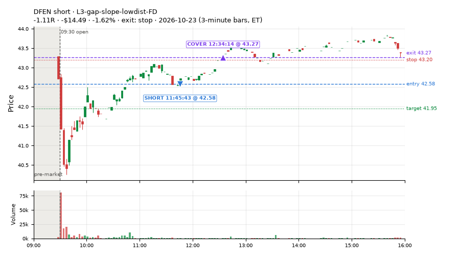
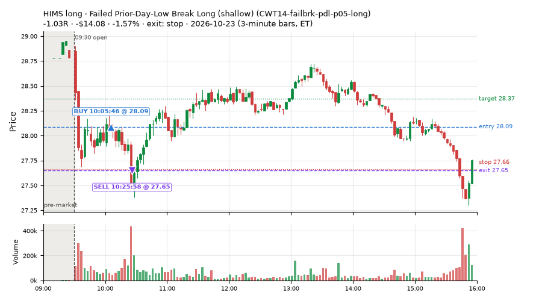

131 trades · win rate 62% · P/L $192.56
PROBATION: no live setup has passed both locked test periods. 10 owner-directed setups added 2026-10-08 (MarcoFlow top 5 + 5 new), untested live. RW6G1 (RW6 + VWAP band guard) added 2026-10-09, probation.

| Symbol | Setup | Side | In | Out | Entry | Exit | Exit reason | % gained | P/L |
|---|---|---|---|---|---|---|---|---|---|
| MRNA | Gap-Down Recovery Fade (all day) (L3-gap-slope-fromopen-FD) | short | 12:10 | 14:32 | 206.13 | 199.55 | target | +3.19% | $26.32 |
| MRNA | Gap-Down Recovery Fade (all day) (L3-gap-slope-fromopen-FD) | short | 11:50 | 14:33 | 205.30 | 199.31 | target | +2.92% | $23.96 |
| MRNA | Coil Under the High (6 bars) (CWT12-coil-k6-long) | long | 10:40 | 11:49 | 199.52 | 205.00 | target | +2.75% | $21.92 |
| Symbol | Setup | Side | In | Out | Entry | Exit | Exit reason | % lost | P/L |
|---|---|---|---|---|---|---|---|---|---|
| HUT | CWT14-failbrk-pdl-p05-long | long | 10:00 | 10:17 | 63.82 | 61.92 | stop | -2.97% | $-26.57 |
| YSS | L3-gap-slope-fromopen-FD | short | 13:31 | 14:53 | 6.24 | 6.40 | stop | -2.56% | $-23.52 |
| TNGX | L3-gap-slope-lowdist-FD | short | 11:55 | 12:42 | 24.19 | 24.73 | stop | -2.23% | $-20.52 |
| DFEN | L3-gap-slope-lowdist-FD | short | 11:45 | 12:34 | 42.58 | 43.27 | stop | -1.62% | $-14.49 |
| HIMS | CWT14-failbrk-pdl-p05-long | long | 10:05 | 10:25 | 28.09 | 27.65 | stop | -1.57% | $-14.08 |








Signal to fill: median 1s, 90th percentile 4s (131 trades). Bars close each minute; the order follows the bar close.
Best excursion (MFE): median 0.49R; worst (MAE) median 0.36R. 18% of trades never got +0.25R in our favour; 3 reached +1R and still closed at or below 0.
| Symbol | Setup | Best R | Worst R | Closed R |
|---|---|---|---|---|
| IXUS | orb20_a | +1.50 | -1.06 | -1.11 |
| BABA | CWT12-coil-k6-long | +1.73 | -0.57 | -0.55 |
| DRAM | CWT12-coil-k6-long | +1.27 | -0.99 | -0.99 |
| CIEN | CWT12-coil-k6-long | +0.76 | -1.05 | -1.08 |
| VIAV | CWT12-coil-k6-long | +0.65 | -1.02 | -1.03 |
| Entry time | Trades | Win | Avg R | P/L |
|---|---|---|---|---|
| 09:50-10:30 | 46 | 67% | +0.01 | $49.58 |
| 10:30-11:30 | 31 | 74% | +0.21 | $70.30 |
| 11:30-13:00 | 37 | 49% | -0.03 | $52.29 |
| 13:00-14:00 | 8 | 62% | +0.06 | $-6.08 |
| 14:00-16:00 | 9 | 44% | +0.15 | $26.47 |
| Setup | Trades | Win | Avg R | Adj R (net of SPY) | P/L |
|---|---|---|---|---|---|
| Panic Flush Reversal (3x volume) (CWT05-flush-m05-v3-long) | 7.0 | 100% | +0.43 | +0.24 | $20.68 |
| Coil Under the High (6 bars) (CWT12-coil-k6-long) | 6.0 | 33% | -0.14 | -0.07 | $1.19 |
| Failed Prior-Day-Low Break Long (shallow) (CWT14-failbrk-pdl-p05-long) | 73.0 | 68% | +0.06 | +0.08 | $80.58 |
| Gap-Down Recovery Fade (all day) (L3-gap-slope-fromopen-FD) | 4.0 | 75% | +0.53 | +0.45 | $49.10 |
| L3-gap-slope-lowdist-FD | 3.0 | 33% | -0.59 | -0.61 | $-21.45 |
| Early Sellers into a Pop (all day) (MF3-open-flowsell-rsi5hi-FD) | 5.0 | 40% | -0.17 | -0.57 | $2.57 |
| Sellers into Strength (all day) (MF5-flowsell-vwapup-rsi5hi) owner-directed; holdouts once: Sep-Oct -0.001R n264, Apr-Jun -0.010R n1199 | 1.0 | 0% | -1.06 | -1.43 | $-6.49 |
| NS4-pm-vwap-reclaim-oversold-short-FD | 1.0 | 100% | +0.25 | +0.11 | $2.55 |
| RW6G1-ns2-up3-vwap2sd-short-FD | 2.0 | 0% | -0.08 | -0.16 | $-2.20 |
| RW7-gapdn-bounce-early-short-FD | 22.0 | 45% | +0.02 | -0.43 | $31.81 |
| Afternoon Blow-off Short (exhaustion_short) failed Apr-Jun holdout: -0.020R/trade over 622 trades | 1.0 | 100% | +0.71 | +0.69 | $12.48 |
| exhaustion_short-FD | 3.0 | 100% | +1.01 | +0.57 | $24.78 |
| Index Last-Half-Hour Momentum (intraday_momentum) failed Apr-Jun holdout: -0.091R/trade over 147 trades | 1.0 | 100% | +0.17 | -0.12 | $0.49 |
| 20-Minute Opening Range Breakout (orb20_a) failed Apr-Jun holdout: -0.040R/trade over 421 trades | 2.0 | 0% | -1.11 | -1.26 | $-3.53 |
Market direction (SPY, beta 1) accounted for $81.99 of today's $192.56; the rest ($110.57) came from the setups themselves. Avg R net of SPY: -0.06 (incl. a hedge leg's cost; report only).
33 setups live today. Today: 202 signals, 131 taken, 9 lost because another setup held the symbol (4%). Since 2026-10-09 (11 sessions): 6324 signals, 2661 taken, 616 lost to other setups (10%). Peak open positions today 46 of 400 slots. Earnings blackout removed 1006 symbols before scanning.
Simulated playing time (not live): 3334 what-if trades of signals not taken, avg -0.24R, 43% winners; of them 463 lost to another setup (avg +0.00R).
Silent: IDX1-qqq100-0955-TQQQ-trail, IDX1-qqq100-0955-TQQQ-hold, IDX2-spy075-0945-3x-trail, IDX3-spy075-0955-3x-trail, IDX5-spy050-0945-3x-trail · Crowded out: ST3-rsi5up-short-pm-t1s1-FD, ST4-emadn-long-am-t1s05-FD, NS5-sma50-flush-oversold-long-FD, MF5-flowsell-vwapup-rsi5hi, RW4-ns3-adv150-short-FD, MF3-open-flowsell-rsi5hi, RW4-ns3-adv150-short, MF4-h40-open-flowsell-FD, NS3-failed-vwap-reclaim-short-FD · Starved: MF3-open-flowsell-rsi5hi-FD, exhaustion_short, exhaustion_short-FD, NS2-sma50break-overbought-short, MF1-945-flowsell-vwapup-FD
| Prio | Setup | Today sig / taken | Sessions | Signals / taken / trades | Taken/day | Expected/day | Lost to other setups | Lost to (setup n) | Top skip reasons | SIMULATED: not-taken n / avg R / win | Verdict |
|---|---|---|---|---|---|---|---|---|---|---|---|
| 1 | Gap-Down Recovery Fade (all day) L3-gap-slope-fromopen-FD | 33 / 4 | 8 | 1466 / 132 / 132 | 16.50 | 11.44 | 94 | L3-gap-slope-fromopen-FD 84, L3-gap-slope-lowdist-FD 35, L3-gap-slope-rsi5hi-FD 14 | not shortable / shorts off 704, daily loss cap 489, symbol held by another setup 94 | 1286 / -0.53R / 29% | ok 82.5 entries/week |
| 2 | Big Gainer Fade with VWAP Band Guard RW6G1-ns2-up3-vwap2sd-short | 0 / 0 | 3 | 0 / 0 / 0 | 0.00 | 0.40 | 0 | – | – | 0 / – | quiet - wait no signals yet; only ~1.2 expected so far |
| 3 | Index Dip Bounce 1 TQQQ IDX1-qqq100-0955-TQQQ-trail | 0 / 0 | 6 | 0 / 0 / 0 | 0.00 | – | 0 | – | – | 0 / – | silent no signals in 6 session(s); no expected rate on file |
| 4 | Index Dip Bounce 1 TQQQ (hold) IDX1-qqq100-0955-TQQQ-hold | 0 / 0 | 6 | 0 / 0 / 0 | 0.00 | – | 0 | – | – | 0 / – | silent no signals in 6 session(s); no expected rate on file |
| 5 | Index Dip Bounce 2 3x S&P IDX2-spy075-0945-3x-trail | 0 / 0 | 6 | 0 / 0 / 0 | 0.00 | – | 0 | – | – | 0 / – | silent no signals in 6 session(s); no expected rate on file |
| 6 | Index Dip Bounce 3 3x S&P IDX3-spy075-0955-3x-trail | 0 / 0 | 6 | 0 / 0 / 0 | 0.00 | – | 0 | – | – | 0 / – | silent no signals in 6 session(s); no expected rate on file |
| 7 | Index Dip Bounce 5 3x S&P IDX5-spy050-0945-3x-trail | 0 / 0 | 6 | 0 / 0 / 0 | 0.00 | – | 0 | – | – | 0 / – | silent no signals in 6 session(s); no expected rate on file |
| 8 | Prior-Day Low Sweep Reversal to VWAP LIQ-pdl-sweep-open15-vwap-long | 0 / 0 | 9 | 1 / 1 / 1 | 0.11 | 0.38 | 0 | – | – | 0 / – | slow 0.6 entries/week; ~108 weeks to 60 trades |
| 9 | ST5-pdbrkup-short-mid-t05s1-FD ST5-pdbrkup-short-mid-t05s1-FD | 0 / 0 | 10 | 13 / 2 / 2 | 0.20 | 0.78 | 0 | – | split-tape short gate 6, not shortable / shorts off 4, broker rejected 1 | 11 / +0.10R / 73% | slow 1.0 entries/week; ~60 weeks to 60 trades |
| 10 | ST8-volspikedn-long-pm-t1s1-FD ST8-volspikedn-long-pm-t1s1-FD | 0 / 0 | 10 | 9 / 8 / 8 | 0.80 | 1.05 | 1 | orb20_a 1 | symbol held by another setup 1 | 1 / +0.91R / 100% | slow 4.0 entries/week; ~15 weeks to 60 trades |
| 11 | RSI Collapse Dip Buy, Nasdaq-below-VWAP only (all day) ST7Q-rsi50dn-qqqbelowvwap-long-t1s1-FD | 0 / 0 | 1 | 0 / 0 / 0 | 0.00 | 1.25 | 0 | – | – | 0 / – | quiet - wait no signals yet; only ~1.2 expected so far |
| 12 | ST6-volspikeup-short-mid-t1s1-FD ST6-volspikeup-short-mid-t1s1-FD | 0 / 0 | 10 | 15 / 4 / 4 | 0.40 | 1.24 | 1 | NS3-failed-vwap-reclaim-short-FD 1, ST6-volspikeup-short-mid-t1s1-FD 1 | split-tape short gate 6, not shortable / shorts off 3, symbol held by another setup 1 | 9 / -0.21R / 33% | slow 2.0 entries/week; ~30 weeks to 60 trades |
| 13 | ST3-rsi5up-short-pm-t1s1-FD ST3-rsi5up-short-pm-t1s1-FD | 0 / 0 | 10 | 12 / 1 / 1 | 0.10 | 1.35 | 5 | ST2-slope20up-long-am-t05s1-FD 4, RW4-ns3-adv150-short-FD 1, NS3-failed-vwap-reclaim-short-FD 1 | symbol held by another setup 5, split-tape short gate 4, not shortable / shorts off 1 | 6 / -0.15R / 17% | crowded-out 5 of 12 signals (42%) lost to setups already holding the symbol |
| 14 | ST7-rsi50dn-long-pm-t1s1-FD ST7-rsi50dn-long-pm-t1s1-FD | 0 / 0 | 10 | 18 / 16 / 16 | 1.60 | 2.17 | 1 | orb20_a 1 | symbol held by another setup 1, daily loss cap 1 | 2 / -0.06R / 50% | slow 8.0 entries/week; ~8 weeks to 60 trades |
| 15 | ST4-emadn-long-am-t1s05-FD ST4-emadn-long-am-t1s05-FD | 0 / 0 | 10 | 20 / 11 / 11 | 1.10 | 2.77 | 6 | RW7-gapdn-bounce-early-short-FD 2, RW5-heat30-flowsell-rsi5pop-gapdn-short-FD 2, orb20_a 1 | symbol held by another setup 6, spread / quote / size 3 | 9 / -0.63R / 22% | crowded-out 6 of 20 signals (30%) lost to setups already holding the symbol |
| 16 | NS4-pm-vwap-reclaim-oversold-short-FD NS4-pm-vwap-reclaim-oversold-short-FD | 1 / 1 | 10 | 30 / 17 / 17 | 1.70 | 3.57 | 3 | L3-gap-slope-fromopen-FD 3 | not shortable / shorts off 8, symbol held by another setup 3, spread / quote / size 2 | 13 / -0.51R / 23% | slow 8.5 entries/week; ~7 weeks to 60 trades |
| 17 | RW6G1-ns2-up3-vwap2sd-short-FD RW6G1-ns2-up3-vwap2sd-short-FD | 2 / 2 | 10 | 27 / 19 / 19 | 1.90 | 3.73 | 1 | RW6G1-ns2-up3-vwap2sd-short-FD 1, RW6-ns2-up3-short-FD 1, NS2-sma50break-overbought-short-FD 1 | not shortable / shorts off 2, split-tape short gate 2, spread / quote / size 2 | 8 / -0.04R / 38% | slow 9.5 entries/week; ~6 weeks to 60 trades |
| 18 | Panic Flush Reversal (3x volume) CWT05-flush-m05-v3-long | 7 / 7 | 3 | 17 / 14 / 14 | 4.67 | – | 0 | – | spread / quote / size 2, daily loss cap 1 | 3 / -0.26R / 67% | ok 23.3 entries/week |
| 19 | Coil Under the High (6 bars) CWT12-coil-k6-long | 9 / 6 | 3 | 52 / 39 / 39 | 13.00 | – | 1 | CWT14-failbrk-pdh-p10-short 1 | spread / quote / size 11, symbol held by another setup 1, daily loss cap 1 | 13 / +0.06R / 46% | ok 65.0 entries/week |
| 20 | L3-gap-slope-lowdist-FD L3-gap-slope-lowdist-FD | 6 / 3 | 10 | 179 / 36 / 36 | 3.60 | 9.76 | 7 | RW6-ns2-up3-short-FD 3, NS2-sma50break-overbought-short-FD 3, L3-gap-slope-rsi5hi-FD 3 | daily loss cap 72, not shortable / shorts off 50, symbol held by another setup 7 | 136 / -0.32R / 38% | ok 18.0 entries/week |
| 21 | NS1-rsidip-rsi5pop-long-FD NS1-rsidip-rsi5pop-long-FD | 1 / 0 | 10 | 39 / 26 / 26 | 2.60 | 5.39 | 5 | L3-gap-slope-fromopen-FD 5 | symbol held by another setup 5, daily loss cap 5, spread / quote / size 3 | 13 / -0.33R / 46% | slow 13.0 entries/week; ~5 weeks to 60 trades |
| 22 | NS5-sma50-flush-oversold-long-FD NS5-sma50-flush-oversold-long-FD | 0 / 0 | 10 | 43 / 27 / 27 | 2.70 | 6.32 | 11 | RW4-ns3-adv150-short-FD 8, NS3-failed-vwap-reclaim-short-FD 8, NS3-failed-vwap-reclaim-short 8 | symbol held by another setup 11, daily loss cap 2, spread / quote / size 2 | 6 / +0.41R / 83% | crowded-out 11 of 43 signals (26%) lost to setups already holding the symbol |
| 23 | Sellers into Strength (all day) MF5-flowsell-vwapup-rsi5hi | 3 / 1 | 5 | 41 / 16 / 16 | 3.20 | 15.47 | 13 | MF5-flowsell-vwapup-rsi5hi-FD 10, MF3-open-flowsell-rsi5hi 2, CWT12-coil-k6-long 1 | symbol held by another setup 13, spread / quote / size 8, not shortable / shorts off 2 | 24 / -0.06R / 46% | crowded-out 13 of 41 signals (32%) lost to setups already holding the symbol |
| 24 | RW4-ns3-adv150-short-FD RW4-ns3-adv150-short-FD | 0 / 0 | 10 | 129 / 63 / 63 | 6.30 | 17.34 | 38 | RW4-ns3-adv150-short-FD 16, NS3-failed-vwap-reclaim-short-FD 15, NS3-failed-vwap-reclaim-short 13 | symbol held by another setup 38, not shortable / shorts off 14, spread / quote / size 11 | 42 / -0.16R / 33% | crowded-out 38 of 129 signals (29%) lost to setups already holding the symbol |
| 25 | Big Loser VWAP Reclaim Fade NS3-failed-vwap-reclaim-short | 0 / 0 | 8 | 56 / 36 / 36 | 4.50 | 3.03 | 4 | LIQ-orl-sweep-open15-s25-long 3, heat_fade_short 1, heat_fade_short-FD 1 | not shortable / shorts off 11, spread / quote / size 5, symbol held by another setup 4 | 12 / -0.11R / 33% | ok 22.5 entries/week |
| 26 | Early Sellers into a Pop (all day) MF3-open-flowsell-rsi5hi-FD | 8 / 5 | 10 | 156 / 56 / 56 | 5.60 | 24.16 | 38 | MF5-flowsell-vwapup-rsi5hi-FD 17, RW5-heat30-flowsell-rsi5pop-gapdn-short-FD 9, RW3-gapdn-rsi5pop-flowsell-short-FD 6 | daily loss cap 42, symbol held by another setup 38, spread / quote / size 10 | 92 / +0.14R / 61% | starved 5.60 entries/day vs ~24.16 expected |
| 27 | Early Sellers into a Pop MF3-open-flowsell-rsi5hi | 2 / 0 | 5 | 32 / 6 / 6 | 1.20 | 9.19 | 17 | MF3-open-flowsell-rsi5hi-FD 14, MF5-flowsell-vwapup-rsi5hi-FD 7, MF1-945-flowsell-vwapup-FD 5 | symbol held by another setup 17, spread / quote / size 6, not shortable / shorts off 2 | 26 / -0.16R / 42% | crowded-out 17 of 32 signals (53%) lost to setups already holding the symbol |
| 28 | RW7-gapdn-bounce-early-short-FD RW7-gapdn-bounce-early-short-FD | 29 / 22 | 10 | 435 / 223 / 223 | 22.30 | 59.92 | 33 | LIQ-orl-sweep-open15-s25-long 11, RW1-gapdn-bounce-flowsell-short-FD 9, MF2-open-rsimidhi-flowsell-FD 7 | daily loss cap 110, not shortable / shorts off 35, symbol held by another setup 33 | 209 / +0.31R / 67% | ok 111.5 entries/week |
| 29 | Afternoon Blow-off Short exhaustion_short | 2 / 1 | 10 | 50 / 20 / 20 | 2.00 | 12.12 | 5 | L3-gap-slope-fromopen-FD 3, RW2-exhaustion-noon-adv150-short-FD 2, L3-gap-slope-rsi5hi-FD 1 | split-tape short gate 15, not shortable / shorts off 7, symbol held by another setup 5 | 28 / +0.04R / 54% | starved 2.00 entries/day vs ~12.12 expected |
| 30 | exhaustion_short-FD exhaustion_short-FD | 5 / 3 | 10 | 151 / 49 / 49 | 4.90 | 64.64 | 16 | RW2-exhaustion-noon-adv150-short-FD 8, exhaustion_short 6, L3-gap-slope-fromopen-FD 5 | daily loss cap 53, not shortable / shorts off 20, symbol held by another setup 16 | 94 / -0.39R / 33% | starved 4.90 entries/day vs ~64.64 expected |
| 31 | Failed Prior-Day-Low Break Long (shallow) CWT14-failbrk-pdl-p05-long | 88 / 73 | 3 | 219 / 149 / 149 | 49.67 | – | 1 | RW7-gapdn-bounce-early-short-FD 1 | spread / quote / size 39, daily loss cap 28, symbol held by another setup 1 | 70 / -0.02R / 69% | ok 248.3 entries/week |
| 32 | Index Last-Half-Hour Momentum intraday_momentum | 1 / 1 | 10 | 14 / 13 / 13 | 1.30 | 2.37 | 0 | – | daily loss cap 1 | 1 / -0.26R / 0% | slow 6.5 entries/week; ~9 weeks to 60 trades |
| 33 | 20-Minute Opening Range Breakout orb20_a | 5 / 2 | 10 | 44 / 17 / 17 | 1.70 | 6.79 | 0 | – | trigger missed between polls 17, spread / quote / size 5, not shortable / shorts off 3 | 22 / +0.05R / 50% | slow 8.5 entries/week; ~7 weeks to 60 trades |
Every trade is attached as a CSV you can open and edit in Excel or Google Sheets. Live page: https://misiti15.github.io/MCF/live/